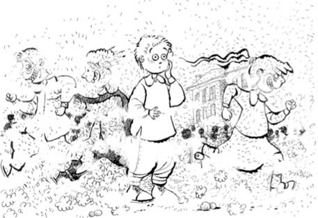

I. MURAT İLKOKULU
Bursa da ülkemiz sınırları içinde olup, her ne kadar kışları soğuk ve yağışlı olsa da, Karagöz’le Hacivat’ı idam etse de, okul konusunda İzmir’le aynı kurallara tabiymiş. Babam bu konuda ayak yapmaya daha Bursa’ya gelirken otobüste başlamıştı. Yol uzun, inene kadar unutur diye düşünmüştüm ama işin rengi iki günde belli oldu; hafta sonu evdeki ilk şok: “Yerleşme ve evi sevmeme işleri iyi kötü hallolunca yarın yeni okuluna gidiyoruz” dedi babam. He! İyi halt ediyoruz, manasında susup sevincimi belli etmedim. Duyan da eskisini sevmedim diye yeni okul ayarlanıyor sanır. Yeni okulummuş! Gerçi yeni geldiğimiz bu muhitte ve evde bulunmaktansa okula giderim daha iyi durumuna da gelmek üzereydim ya neyse. Okulun adı I. Murat. Yani, “Şerif’le sizi en birincisine yazdırdık, daha ne!” gibi bir okul adı.
Okulun adı I. Murat İlkokulu dedim, ilgilenenler için; tarihi yıllar öncesine dayanıyor, hatta Bursa’nın en eski ilkokullarından. Yani biz bulduğumuzda eskiydi, ayrıca Şerif ve ben yıpratmadık, dala yaprağa dokunmadık, okulun bahçesinde yeşil bir şey yoktu zaten.
Şerif de aynı okuldaymış, babam hafifletici sebep olarak söylüyor. O, Doburca; ben Çekirge Meydanı tarafından gelip gideceğiz. Neyse, siyah önlük, beyaz yaka, bari kaderimiz güzel olsun, Allah kurtarsın duygusuyla çıkıyorum evden.
Babam bu okulda öğlenci olarak yazdırmış beni. İzmir gibi değil, burada sabah ve öğlen iki vardiya yapılıyor. “Sabah ben okulu çok sevdim, öğlen de geleceğim” diyen bir Allah’ın kuluna rastlamadım öğrenim hayatım boyunca. Gece yatmaz, gündüz kalkmaz ekibinden olduğumdan öğlenci olmam daha iyi olur diye düşünmüş babam belli ki.
Okula vardık. Kıbrıs Savaşı sırasında Çiğli Hava Lojmanları’nda neredeyse cephenin ön saflarında oturuyorduk. Savaşa katılanlar dinlenip kendilerine gelsinler amacıyla bir yıl okula ara verirler diye bir umut içinde olmadım desem yalan olur.
Başım dik, alnım ak, yarı savaş gazisi kıvamında merdivenlerden okula doğru çıktım. Bilen bilir; yeşil Bursa’nın bozkır okullarındandır, sağ olsunlar, bir dal maydanoz kadar yeşil alan bırakmayıp tozu toprağı çocukların kullanımına açmışlar. Ana kapıdan girip öğretmenler odasına vardık. İçinizdeki vicdan sahipleri gibi benim de içim rahat. “Gaziler ve yiğitler bu yıl ara verecekler, seneye savaş çıkmazsa bekleriz” cümlesine hazır ve sabırla bekliyorum. Muazzez Öğretmen geldi. Babamla hoş geldin beş gittin sohbeti yaptılar. Malum, babam da öğretmen. “Eti kemiği, bereketi yiğitliği sizin olsun, namı bizim” gibisinden bir şeyler söyledi babam. Yeni öğretmenimin elini öptüm. Eski okuldan, disiplin kurulundan ve öğretmenler odasından talimliyim; el buldun mu hemen öpeceksin.
Öğretmen çocuğuyum ya, “Nasılsa bir şeyler öğrenip gelmiştir, beni fazla yormaz” diye düşündüğünden olsa gerek, sırtımı şöyle bir sıvazladı öğretmenim. Bu arada da gözleriyle beni tartıyor; bundan ne kadar akıl fikir çıkar da kalanını bağışlarız gibisinden.
Yeni sınıfıma gittim. 3B sınıfındayım. İlk kez B şubesindeyim. En arkada Meral diye ince yapılı, sarışın bir kızın yanına oturttular beni. En arka sıradayım ve tahtayı hayal meyal seçiyorum. Öğretmen tahtaya bir şeyler yazıyor ve ben hiçbir şey göremiyorum. Bu görememe işi bana bir yıl sonra gözlük olarak dönecek; tahtayı göremiyor olmam babamı fena hâlde yaralayınca mecbur kalıp gözlük takmıştım. Neyse, konu dağılmasın. Öğretmenin tahtaya yazdıkları için Meral’in defterine muhtacım. Yalnızca defterine değil suyuna da muhtaç olduğumu ilk on dakikada anladım. Yanındaki plastik mataraya bakıp, “Bu ne için?” dedim. “Su var içinde” dedi. “Ee?” dedim. “Tuvalette bazen su akmaz” dedi. İzmir’deki okulda koridorlarda öğrenciler içebilsin diye içinde soğutucu bulunan ve düğmeye basınca su akan şeyler vardı. Şeyler diyorum, düğmesine basınca bir karış kadar yukarı su fışkırtan öğrencinin eğilip içebildiği sebil gibi bir şey. Amerikalılar yaptığından, bizimkiler de bozmadığından işimize yarardı. Belli ki Bursa’daki okulda Amerikalılar aynı şeyi yapmamışlardı!
Şerif’i görmek için ilk teneffüsü bekledim. Şerif 4B sınıfındaydı. Zil çalar çalmaz hemen bahçeye fırladım, gözlerimle aradım ve onu iki katı cesametindeki bir oğlanın sırtında diğer çocuklarla deve güreşi oynarken buldum. Bu oyunda kural şudur: Ufak tefek olanlar, oyuna adını veren irilikteki çocukların sırtına çıkarlar ve birbirlerine omuzdan çarpar dururlar. Sırta alınmış olan düşünce o ekip kaybetmiş olur. Şerif’in bağrış çağırışından devesinin adının Ferit olduğunu anladım.
Şerif’im Ferit’e, “Ona çarp, bundan kaç” dedikçe oğlanın bir koşturması var ki gören, okula oyunlarda deve olsun diye yazdırıldığını zanneder. Hani oluruna gelir bir de diploma alırsa tadından yenmez, diye düşünmüş ailesi belli ki. Gerçi Şerif’im de heybetini ve yiğitliğinden gelen ağırlığını Ferit’e yüklemeyip özünde taşıdığı için, Ferit ağırlığı pek hissetmiyordu. Beni fark etti, devesinden atladığı gibi yanıma seğirtti civanım.
Okul bahçesi silme toz toprak; oyunlar, deve güreşi… Su içmek için matara şart, burası yeşil Bursa, varın nasıl bir yere düştüğümüzü siz anlayın. Günler sonrasında dostumla sarmaş dolaş olduk. 4. sınıfta olan civanım 2. sınıfın tüm heybetini ve 5. sınıfın olgunluğunu üzerinde taşıyordu. Birbirimizi ne kadar özlediğimizi fark ettik, gözlerimiz ortalık yerde dolmadıysa şaşkınlığımızdandır.
Benimle sınıfıma kadar geldi, sınıfımın yerini bir güzel tespit etti. Oturduğum yeri ayrıca çok tuttu. “Abi, en arkadasın; hayırlısıyla karışan görüşen olmaz” anlamında bir suskunlukla oturduğum sıraya ve yanımdaki cılız kıza baktı. Mataraya ilişti gözü, “Bir tane almak lazım” dedi. Çöle daha önce düşenlerin düşünceli hâli gözlerinden okunuyordu.
Günler var ki konuşma fırsatımız olmamıştı. Oturduğu mahalleden, neler yaptıklarından, bir de derslerinden bahsetti. Tek konuşmadığımız konu, geride bıraktığımız lojman hayatımız ve anılarımız oldu. Artık ikimiz de biliyorduk; artık güzel birer hatıraydı tüm yaşananlar.
Evde annemlerle okuldaki ilk günümü ve su için matara işini konuştuk. Babam, “Yarın akşam gelirken alırım bir tane” dedi. İki gün sonra babam matara işini halletti. Ama ne matara! Bir buçuk litre suyu doldur, atla deveyi koştur çayırda, üç gün idare eder. Ben mataranın cesametine bakınca, “Arkadaşların da içerler” dedi. Plastik mavi bir şey, boynuma astım, evdeki tahta kılıcı da belime takınca tam okulluk oldum ki, demeyin gitsin.
Kardeşim seneye ilkokula başlayacak, çantama defterlerime falan baktı. Artık söylediklerini herkesin rahatça anlayabileceği duruma geldi, yaş altı olmuştu. Okula başladığında konuşmayı değil okumayı yazmayı öğrense yeterli olacağından benim de içim rahat (bu yaşına kadar kendi yarattığı lisanla anlaştı bizimle).
Her neyse, okulla aram zaten yoktu, burada hepten soğudum. Demek beni idare eden, okul dışında geçen zamanlardaki yaşadıklarımızmış. Lojmanlardaki arkadaşlarımı, palmiye dallarından yaptığımız kılıçları, babamın da oynadığı maçları düşünüp hayallere dalar oldum.
Hayaller deyince aklıma ne geldi; bir gün yeni okulumuzun koridorlarında bir söylenti yayıldı: Cuma günü ders yokmuş, okul salonunda Karagöz ve Hacivat gösterisi varmış! Civanımın sınıfına vardım, işin aslı ne ola diye öğrenmeye. Onun sınıfında da söylenti almış yürümüş. Beni görür görmez gülerek yanıma geldi, “Duydun mu?” dedi. “Abi, mezarlarını gözlerimle gördüm, var bunda bir iş” demeye hazırlanıyordum ki, “Geçen sene aynı gösteriyi yapan tiyatrocular gelmiş, biz o zaman İzmir’deydik” dedi Şerif’im. “Ha, o zaman iyi” anlamında sustum. “Cuma birlikte seyrederiz” diye devam etti Şerif. Ben de ona, “Çok komiklermiş, işi gücü aksattıkları için asmışlar onları” dedim. Biz zaten ayrı sınıflardayız, üstelik derslerde de eskisi kadar konuşmuyoruz manasında bir suskunlukla sınıfın kapısına baktı, ben de baktım; öğretmen sınıfa girmek üzereydi. “Abi, ben daha üçe alışamadım, sizin sınıf ağır gelir” dercesine kıyıdan kıyıdan çıkıp gittim sınıfıma.
Gerçekten de cuma günü tiyatro ekibi geldi, salonu dolduran çocukların çıkardığı gürültü altında yalap şap bir şeyler oynamaya çalıştılar. En çok, üzerlerindeki rengârenk kostümleri sevdim. Kül renginde geçen onca gün sonrasında bir saat için bile olsa renklenmişti dünya benim için.
I. Murat İlkokulu’nda ocak ayı ortasına kadar okudum. Sonra okula ara mı verdim? Ne gezer... Zaten geçici olarak oturduğumuz bu semtten Emirsultan tarafına taşınacağımızı öğrendim babamdan. Yeni okulum artık orada olacaktı. Bir sınıf, üç ayrı okul. Ne sevindiğimi ne üzüldüğümü hatırlarım Çekirge’den taşınma zamanlarımızla ilgili. Bozkır gibi bir yerden dörtnala gidercesine yitip geçmişti iki ay. Şeriflerin oturduğu yer mi? Az sabırla o da gelecek, kimse merak etmesin. Şerif’imin muhitine varmadan Emirsultan’a gitmek olur mu hiç!